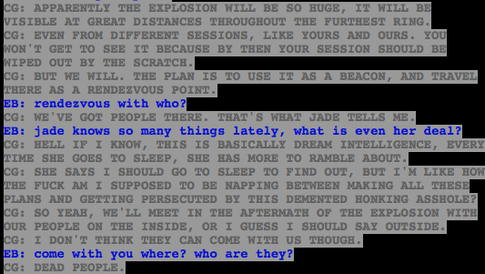

I BET IT’S THEIR ANCESTORS!
Although if it was, that would be really weird. Because their ancestors are creepy adults who are in some parts responsible for killing each other, which is a troll thing so I don’t know what it would be like for a troll to meet someone they killed in the afterlife, and we really don’t know what it’s like for adult trolls to interact with child trolls, so everything is pure conjecture even if my guess is right.
Also I am suspicious of Jade’s dream knowledge, since her dream self died. But maybe she’s getting information from Feferi and them, and of course last we saw she was with Aradia, and Aradia knows things.